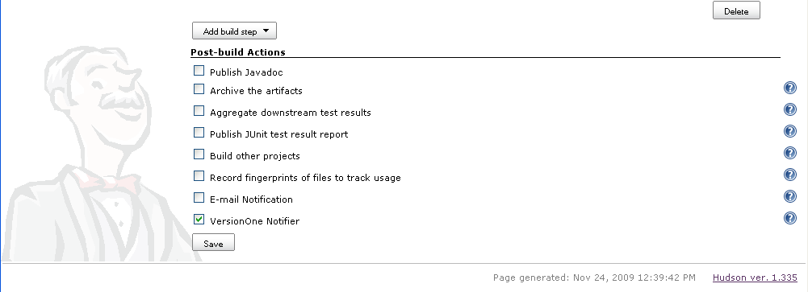

Overview
- Introduction
- System Requirements
- Installation
- Configuration
- Version Control
- Team Edition
Project Documentation

If you are using Team Edition, you need to manually create the Build Project. Follow the Team Edition instructions before proceeding.
 4. Navigate to the Admin -> Projects -> Build Project page
4. Navigate to the Admin -> Projects -> Build Project page
 5. Click Add to add a new Build Project. Specify the following * Name - this is how the Build Project will be known to VersionOne users * Reference - this is how the Build Project is known to Jenkins 6. Click Ok to save the new Build Project. 7. Navigate to the Admin -> Projects -> Projects page. 8. Click Edit on the row for the project you want associated with a Build Project. 9. Using the Build Project dropdown add the appropriate Build Project.
5. Click Add to add a new Build Project. Specify the following * Name - this is how the Build Project will be known to VersionOne users * Reference - this is how the Build Project is known to Jenkins 6. Click Ok to save the new Build Project. 7. Navigate to the Admin -> Projects -> Projects page. 8. Click Edit on the row for the project you want associated with a Build Project. 9. Using the Build Project dropdown add the appropriate Build Project.
 10. Click Ok to accept the changes. 11. Logout.
10. Click Ok to accept the changes. 11. Logout.
These instructions assume that you are logged into Jenkins as an administrator.
 5. Click Upload. 6. Restart your Jenkins instance in order to load the new plugin. 7. On the Jenkins Dashboard, click Manage Jenkins. 8. Click Configure System. There is a new VersionOne section at the end of this page. 9. Provide your VersionOne connection parameters.
5. Click Upload. 6. Restart your Jenkins instance in order to load the new plugin. 7. On the Jenkins Dashboard, click Manage Jenkins. 8. Click Configure System. There is a new VersionOne section at the end of this page. 9. Provide your VersionOne connection parameters.
 If you connect to VersionOne through a proxy, check the Use proxy server checkbox and provide additional Proxy parameters
If you connect to VersionOne through a proxy, check the Use proxy server checkbox and provide additional Proxy parameters
 It is recommended that you do not change the Reference Field or Comment RegEx fields. The Reference Field is the system name of the attribute to search when matching the ID in change comments with workitems in VersionOne. The Comment RegEx is used to extract workitem identifiers from the change comments. 10. Test the connection. 11. Save the settings. 12. Choose the Job you wish to have published to VersionOne. Remember that this job name must be configured in VersionOne. 13. Click Configure to configure the workspace. 14. In the Post-build Actions click the VersionOne Notifier checkbox.
It is recommended that you do not change the Reference Field or Comment RegEx fields. The Reference Field is the system name of the attribute to search when matching the ID in change comments with workitems in VersionOne. The Comment RegEx is used to extract workitem identifiers from the change comments. 10. Test the connection. 11. Save the settings. 12. Choose the Job you wish to have published to VersionOne. Remember that this job name must be configured in VersionOne. 13. Click Configure to configure the workspace. 14. In the Post-build Actions click the VersionOne Notifier checkbox.
 15. Click Save.